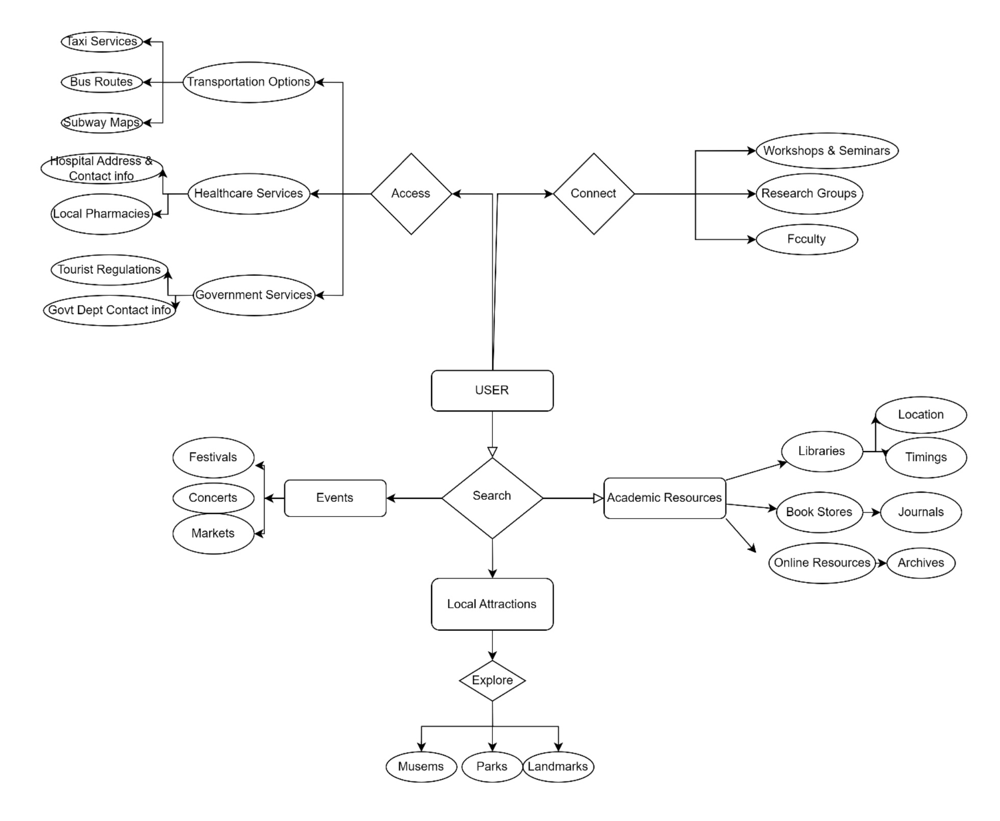

UI design Project
Team Members
- Satwika Chowdary Poluru
- Gopi Shivraj
- Sai Srikar Chowdary Pattipati
- Vankireddy Saipallav
- Balaji Tanniru
Project Description
Our website's focus is on helping overseas students move to Boston simply and pleasantly. Unlike lengthy resource lists, our platform is easily navigable and meets the actual needs of students adjusting to new surroundings. The website is organized with unique, helpful parts that offer a relevant atmosphere and valuable information. Our mission is to make it as simple as possible for students to obtain the academic resources they need whether it be by locating prestigious colleges and institutions or by seeing Boston's libraries and study areas. We also understand that moving to a new place is about more than simply education. That's why we've compiled a list of suggested restaurants and places to eat and stay in the area. Our goal is to provide an effortless user interface. We've included elements on the website to make it simple to use and accessible so that students can get the study spaces, dining options, and housing information they need efficiently. Our website is unique because it takes a user-focused approach and combines all these components into a smooth, unified platform. It's not only about giving them information; it's also about making their time in Boston more enjoyable and enriching their experience as foreign students.
User Analysis


Task Analysis
Task 1: Finding and Accessing Academic Resources
Goal: Help users find and use appropriate academic resources, libraries, and research opportunities.
Subtasks:
- Search for Academic Resources
- Provide study materials, online databases, and library search opportunities.
- Select materials based on availability, subject, and helpfulness (such as books and articles).
- Provide recommendations compatible with the user's field of study.
- Access Library and Research Facilities
- Provide information about services and memberships at libraries.
- List the locations and hours of operation of libraries.
- Offer details about locations with restricted access, including archives and rare collections.
- Connect with Research Groups and Faculty
- Provide a list of the city's or institution's ongoing research programs and labs.
- Provide both department and faculty contact information.
- Provide a list of current research opportunities.
- Access Digital and Online Learning Resources
- Provide links to the institution's online courses or learning resources.
- Provide students with access to digital academic publications and textbooks.
- Offer tutorials on efficient research database use.
- Schedule Time at Library Facilities
- Allow reservations for research or study areas.
- Provide the option to reserve specialized equipment online.
- Provide calendar features to verify facility availability.
- Participate in Academic Workshops or Seminars
- Provide a schedule of upcoming academic seminars, lectures, and conferences.
- Provide options to sign up for live classes or webinars.
HTA for Task 1: Finding and Accessing Academic Resources
1.1 Provide search options for:
- Libraries
- Online databases
- Research materials
1.2 Filter resources by:
- Subject
- Type (e.g., books, articles)
- Availability
1.3 Offer recommendations based on:
2.1 Provide information about:
- Library memberships
- Services provided by libraries
2.2 Display:
- Library locations
- Hours of operation
2.3 Offer details on special access areas, such as:
- Archives
- Rare collections
3.1 List available:
- Research projects
- Labs in the city or institution
3.2 Provide contact information for:
- Faculty members
- Departments
3.3 Include a directory of:
- Ongoing research collaborations
4.1 Provide links to:
- Online courses associated with the institution
- Learning platforms
4.2 Offer access to digital versions of:
- Textbooks
- Academic journals
4.3 Include tutorials on:
- How to use research databases effectively
5.1 Allow users to book:
- Study rooms
- Research spaces
5.2 Offer online reservations for:
- Special equipment (e.g., computers, projectors)
5.3 Include calendar tools to:
- Check facility availability
6.1 List upcoming:
- Academic workshops
- Lectures
- Seminars
6.2 Provide options to sign up for:
- Webinars
- In-person workshops
6.3 Offer downloadable resources from:
- Past academic events
- Event recordings
Task 2: Exploring Local Attractions and Events
Goal: Help users find and experience nearby attractions, events, and activities that match their interests.
Subtasks:
- Search for Local Attractions
- Provide a category-specific, searchable database of attractions (museums, parks, historical landmarks).
- Utilize filters like user ratings, distance, and opening hours.
- Offer interactive maps that indicate the locations of activities.
- Explore Events and Festivals
- List events, both past and present (festivals, concerts, marketplaces).
- Offer filters based on location, date, and category.
- Allow users to purchase tickets, add events to their schedule, and RSVP.
- Build a Custom Itinerary
- Allow visitors to bookmark their preferred events and attractions.
- Arrange events according to time and place each day.
- Based on the route, suggest eateries or nearby attractions.
- Access Attraction Reviews and Visitor Tips
- Offer rangs and reviews submiaed by users for events and attractions.
- Provide advice from previous guests (e.g., secret locations, ideal times to visit, accessibility details).
- Permit users to add images and share their own stories.
- Get Notfications and Alerts•
- Give users the ability to subscribe to alerts about event alterations, such as cancellations or additions.
- Distribute announcements about ticket availability and RSVP cutoff dates.
- Give current information about events that are more happening or well-liked in the city.
- Share Itineraries with Friends or on Social Media
- Allow users to share personalized itineraries with friends or travel partners via email or social media.
- Provide tools for group itinerary planning, such as voting on aaractions.
HTA for Task 2: Exploring Local Attractions and Events
1.1 Provide a searchable database of attractions categorized by:
- Museums
- Parks
- Historical landmarks
1.2 Use filters such as:
- Opening hours
- Distance from user’s location
- User ratings
1.3 Include interactive maps showing:
2.1 List current and upcoming events like:
- Festivals
- Concerts
- Markets
2.2 Provide options to filter by:
- Date
- Category (e.g., music, art, food)
- Location
2.3 Allow users to:
- RSVP for events
- Buy tickets
- Add events to their itinerary
3.1 Allow users to save:
- Favorite attractions
- Events
3.2 Organize activities by:
3.3 Offer recommendations for:
- Nearby restaurants
- Nearby sights based on the itinerary
4.1 Provide user-generated reviews and ratings for:
4.2 Include visitor tips, such as:
- Best times to visit
- Hidden spots
- Accessibility information
4.3 Allow users to:
- Upload photos
- Share personal experiences
5.1 Allow users to sign up for notifications of:
- Event changes (e.g., cancellations)
- New events
5.2 Provide reminders for:
- RSVP deadlines
- Ticket availability
5.3 Offer real-time updates on:
- Popular events
- Trending events in the city
6.1 Enable users to share their custom itineraries via:
6.2 Offer collaborative tools for group itinerary planning, including:
Task 3: Accessing City Services and Resources
Goal: Our next task is to provide users with easy access to key city services and resources like transit, healthcare, and local government information.
Subtasks:
-
Find Transportation Options
- Provide public transportation information (e.g. bus routes, subway maps).
- Provide information on taxis, ridesharing, and bike rentals.
- Provide interactive tools for real-time traffic and transportation updates.
-
Locate Healthcare and Emergency Services
- Provide information on surrounding healthcare facilities.
- Provide pharmacy and urgent care facility contact information.
- Include emergency contact information and resources.
-
Access Local Government Services
- Offer resources for municipal regulations, permits, and licensing.
- Provide links to city departments (e.g., sanitation and public safety).
- Include tourist papers and guides, such as tax and visa information.
-
Explore Recreational and Cultural Resources
- Offer information on nearby parks, recreation areas, and sports facilities.
- Provide information about museums, galleries, theaters, and other cultural attractions.
- Provide schedules for events, festivals, and community activities during tourist visits.
-
Find Accommodation and Dining Options
- List hotels, hostels, and short-term rental choices.
- Provide information about area restaurants, cafes, and food markets, including popular cuisines and dining options.
- Provide resources for booking reservations and obtaining offers and discounts.
-
Access Safety and Security Resources
- Inform tourists about local law enforcement contacts and safety tips.
- Provide resources to report missing property, theft, or emergency.
HTA for Task 3: Accessing City Services and Resources
1.1 Provide information on public transport:
- List bus routes
- Include subway maps
- Provide schedules and fare information
1.2 Offer details on taxis, ridesharing, and bike rentals:
- List taxi services and contact information
- Provide ridesharing app options (Uber, Lyft)
- Offer bike rental services and locations
1.3 Include interactive tools for real-time traffic and transport updates:
- Integrate real-time traffic maps
- Provide live public transport updates
- Include alerts for delays or disruptions
2.1 Offer information on nearby hospitals and clinics:
- List major hospitals with contact details
- Include urgent care centers and their hours
2.2 Provide details on pharmacies and urgent care centers:
- List nearby pharmacies and their services
- Include 24-hour pharmacy options
2.3 Include emergency contact information and resources:
- Provide local emergency numbers (police, fire, ambulance)
- Offer resources for emergency situations (first aid)
3.1 Provide resources for local regulations, permits, and licenses:
- List common regulations tourists should be aware of
- Provide permit applications for events or gatherings
3.2 Offer links to city departments:
- Include sanitation department contact information
- Provide public safety department resources
3.3 Include forms and guides for tourists:
- Provide information on tourist taxes
- Include visa information and requirements
4.1 Provide information on local parks, recreational areas, and sports facilities:
- List parks with amenities and activities available
- Include sports facilities and their offerings
4.2 Offer details about museums, galleries, theaters, and other cultural attractions:
- List major cultural sites and their hours
- Provide ticketing information and special exhibitions
- Include schedules for events, festivals, and community activities
- Provide a calendar of events
- Include links to buy tickets or RSVP
5.1 Provide a list of hotels, hostels, and short-term rental options:
- List accommodations by category (budget, luxury)
- Provide contact details and websites
5.2 Include information on local restaurants, cafes, and food markets:
- List popular dining options by cuisine
- Include reviews and ratings
5.3 Offer resources for making reservations and finding deals:
- Provide links to reservation platforms (OpenTable, Booking.com)
- Include information on current deals or discounts
6.1 Provide information on local law enforcement contacts:
- List police department contact information
- Include safety tips specific to tourists
6.2 Include resources for reporting lost items, theft, or emergencies:
- Provide instructions for reporting incidents
- List nearby lost and found resources
Entity-Relationship Diagram

This Entity-Relationship Diagram (ERD) shows the relationships between entities like User, Academic Resource, Attraction, Event, Booking, and Recommendation for students visiting Boston. Relationships like "Access," "Attend," "Utilize," and "Write" link each thing, which is a significant part of the students' experience in Boston.
Entities:
User (International Student):
Represents international students studying or visiting Boston who use the website to discover the city, utilize academic resources, and attend events.
- User_id: A unique ID for each student.
- Name: The student's name.
- Email: The student's email address (for communication, notifications, etc.).
- Preferences: The student's interests, such as local culture, education, social events, or outdoor activities. These help personalize recommendations.
Attraction:
Like travelers, international students enjoy discovering Boston's attractions. These could be well-known locations that offer leisure and cultural enrichment, like parks (e.g., Boston Common), historical sites (e.g., Freedom Trail), or museums (e.g., Museum of Fine Arts).
- Attraction_id: A unique identifier for each attraction.
- Name: The name of the attraction (e.g., "Harvard Square").
- Description: A brief overview of what the attraction offers.
- Location: Where the attraction is located (address).
- Hours: The opening and closing times for visitors.
- Admission_fee: The cost (if any) to visit the attraction (students often get discounts).
Event:
International students can interact with the community through local events. Events may include social mixers, concerts, university fairs, and cultural festivals (e.g., the Boston Arts Festival or foreign nights offered by universities).
- Event_id: A unique identifier for each event.
- Name: The name of the event (e.g., "Boston International Student Mixer").
- Description: A summary of what the event is about.
- Location: Where the event is happening (venue or place).
- Date: The date when the event takes place.
- Time: The time the event starts and ends.
- Ticket_price: The cost of attending (if applicable, and often free for students).
City Service:
International students in Boston rely on a number of essential local services. These might include city libraries, health services, public transit (such as the "T"), or community centers that assist students with housing, legal aid, or financial guidance.
- Service_id: A unique ID for each city service.
- Name: The name of the service (e.g., "Boston Public Transit").
- Description: An explanation of what the service provides.
- Contact_info: Information to reach the service (phone, email).
- Location: Where the service is located or how it can be accessed.
Academic Resource:
This entity covers resources like libraries, research centers, and university support services because foreign students frequently look for academic institutions to study at. These include institutions such as the research centers at Harvard, the libraries at MIT, and the Boston Public Library.
- Resource_id: A unique ID for each academic resource.
- Name: The name of the academic institution or library (e.g., "MIT Research Library").
- Description: What the resource offers (e.g., access to books, databases, or study spaces).
- Location: Where the resource is located (e.g., within a campus or public library).
- Opening_hours: When it's open to students or the public.
- Access_requirements: Any specific criteria for access (e.g., student ID or membership).
Review:
In order to assist other students in making sound choices, international students might choose to discuss their experiences with nearby services, attractions, and events.
- Review_id: A unique ID for each review.
- User_id: The student who wrote the review.
- Entity_id: The attraction, event, or service being reviewed.
- Rating: A numerical rating (e.g., 4/5 stars).
- Comment: The student's written feedback.
- Date: When the review was posted.
Booking:
Tickets or reservations are needed for a lot of attractions and activities. Events such as university conferences, special shows in museums, or performances might need reservations for international students.
- Booking_id: A unique ID for each booking.
- User_id: The student making the booking.
- Event_id: The event being booked (if applicable).
- Attraction_id: The attraction being booked (if applicable).
- Booking_date: The date the booking was made.
- Status: Whether the booking is confirmed, pending, or cancelled.
Recommendation:
International students receive individualized recommendations for services, events, and attractions that are relevant to them based on their past activities and interests. They might receive suggestions for events that are related if they regularly look for academic conferences, for example.
- Recommendation_id: A unique ID for each recommendation.
- User_id: The student receiving the recommendation.
- Attraction_id: The recommended attraction (if applicable).
- Event_id: The recommended event (if applicable).
- Relevance_score: How closely the recommendation matches the student's preferences.
Relationships:
1. User ↔ Attraction (Access):
- International students can visit multiple attractions, and each attraction can be visited by many students.
2. User ↔ Event (Attend):
- International students can attend various local or university-hosted events, and each event may be attended by many students.
3. User ↔ City Service (Utilize):
- International students rely on many city services, like public transportation or health services, and each service can support multiple students.
4. User ↔ Academic Resource (Access):
- International students can access various academic resources, and each academic resource can be accessed by many students.
5. User ↔ Review (Write):
- Students can leave reviews for the attractions, events, or services they use. Each review is written by a student but linked to one attraction, event, or service.
6. User ↔ Booking (Make):
- International students can make bookings for events or attractions, with each booking linked to a specific student.
7. Attraction/Event/Service ↔ Review (Receive):
- Attractions, events, and services can receive reviews from multiple students, with each review connected to a specific attraction, event, or service.
8. User ↔ Recommendation (Receive):
- International students receive personalized recommendations for attractions, events, or services based on their preferences, and each recommendation is linked to a single student.